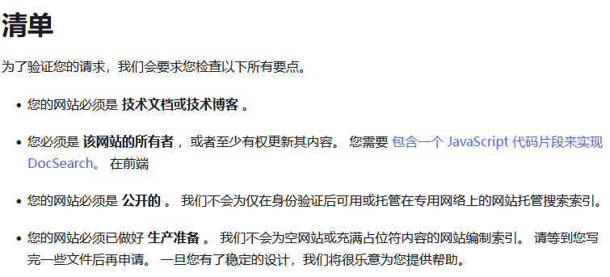
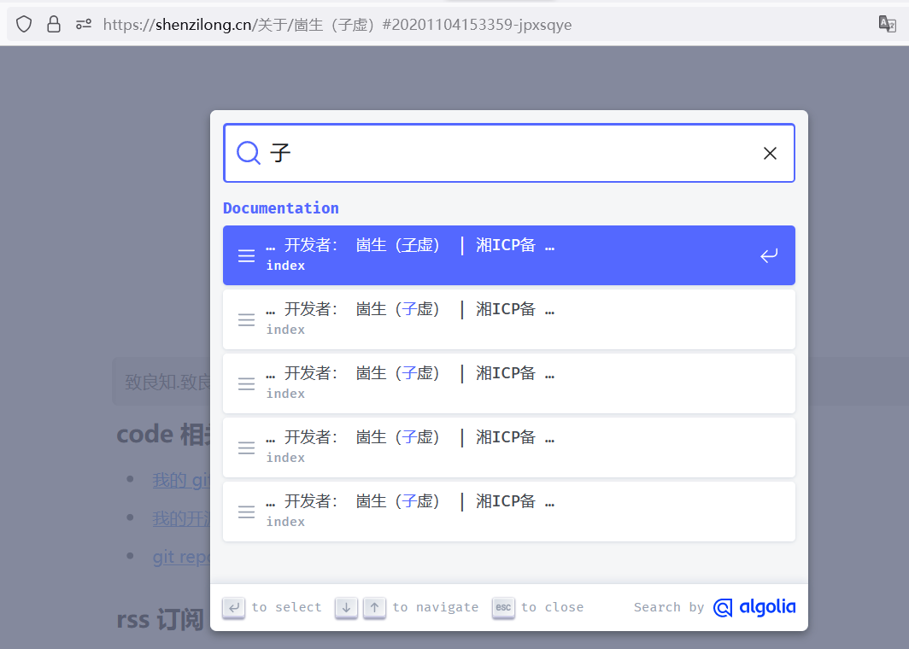

最近更新.rss.xml
诸位新年快乐🎉
下一步我将开始完善 OceanPress 思源插件，将web ui内置到插件之中。
 web ui 预览列表界面
web ui 预览列表界面 运行效果
运行效果
web ui 预览列表界面运行效果现在 web ui 可以在编译之前点击相关文档预览编译之后的效果了。
支持预览功能，依赖于 hono 优秀的多平台运行能力，我将 OceanPress cli程序的
运行代理站点
功能移植到了 web ui界面，
v0.0.10
支持预览功能，依赖于 hono 优秀的多平台运行能力，我将 OceanPress cli程序的
运行代理站点
功能移植到了 web ui界面，
现在 web ui 可以在编译之前点击相关文档预览编译之后的效果了。
web ui 预览列表界面运行效果
web ui 预览列表界面运行效果下一步我将开始完善 OceanPress 思源插件，将web ui内置到插件之中。
诸位新年快乐🎉
published:Thu, 28 Dec 2023 15:55:02 +0000
原来前端纯JS就能实现人脸识别检测，使用简单，性能优异，准确率也高，有案例演示，有源码，希望可以帮到大家的学习。
published:Thu, 28 Dec 2023 15:55:02 +0000
原来前端纯JS就能实现人脸识别检测，使用简单，性能优异，准确率也高，有案例演示，有源码，希望可以帮到大家的学习。
published:Thu, 28 Dec 2023 15:55:02 +0000
原来前端纯JS就能实现人脸识别检测，使用简单，性能优异，准确率也高，有案例演示，有源码，希望可以帮到大家的学习。
published:Thu, 28 Dec 2023 15:55:02 +0000
published:Thu, 28 Dec 2023 15:55:02 +0000
published:Thu, 28 Dec 2023 15:55:02 +0000
原来前端纯JS就能实现人脸识别检测，使用简单，性能优异，准确率也高，有案例演示，有源码，希望可以帮到大家的学习。
原来前端纯JS就能实现人脸识别检测，使用简单，性能优异，准确率也高，有案例演示，有源码，希望可以帮到大家的学习。
published:2024-01-02 11:28
published:2024-01-02 11:28
published:2024-01-02 11:28
published:2024-01-02 11:28
published:2023-12-30 20:15
published:2023-12-30 20:15
published:2023-12-30 20:15
published:2023-12-30 20:15
published:2023-12-29T00:11:07Z
updated:2024-01-02T08:30:07Z
这里记录每周值得分享的科技内容，周五发布。...
published:2023-12-29T00:11:07Z
updated:2024-01-02T08:30:07Z
这里记录每周值得分享的科技内容，周五发布。...
published:2023-12-29T00:11:07Z
updated:2024-01-02T08:30:07Z
这里记录每周值得分享的科技内容，周五发布。...
published:2023-12-29T00:11:07Z
updated:2024-01-02T08:30:07Z
published:2023-12-29T00:11:07Z
published:2023-12-29T00:11:07Z
updated:2024-01-02T08:30:07Z
updated:2024-01-02T08:30:07Z
这里记录每周值得分享的科技内容，周五发布。...
这里记录每周值得分享的科技内容，周五发布。...
支持 meilisearch issues/5
支持 meilisearch issues/5
支持 meilisearch issues/5
v0.0.9
支持 meilisearch issues/5
推广
如果你觉得自行配置很麻烦，不妨雇佣我来完成此工作

如果你觉得自行配置很麻烦，不妨雇佣我来完成此工作
兼容思源绝大部分效果 🎉
全平台随用随走
基于node.js 的全平台运行能力
基于浏览器网页的全平台、随用随走
支持挂件 (需要挂件本身适配)
通过插件对挂件生成快照，
甚至不适配的都能让你能看见预览效果(需要安装插件，只是能看...)
在网页中显示该快照
适配OceanPress的挂件支持，让一些挂件能够运行在静态网站上
一键部署
网页上传到自定义接口
基于 node.js 命令行自动编译、部署
生成chm单体文件，便于类似分发帮助文档这种需求
SEO 友好，可以放心修改文章名称，移
动块，不用担心分享的链接无法访问到
内容(在笔记中删掉了那我没办法
通过 preload 来实现
基于块id的永久链接
仅支持文档块和标题块，否则体积过大
可读路径的302重写
上面方法无法定位的情况下通过文档
名进行推荐
自动生成 sitemap.xml
更易于复制粘贴分享
许多网站的编辑器都是能够拉取图片的，但有一些的实现是网站后端进行
拉取(避免前端跨域无法拉取)，所以部署到公网的文章可以直接选中片
段粘贴图片，而内网的则不行
小、快、省
通过对输出html结构优化，能够输出体积更小，解析更快的源文件
可选通过cdn加载公共资源文件
更节省服务器流量
更快的js、css加载速度
支持增量编译，编译速度很快
可选的图片优化、压缩、生成预览
支持 RSS，例如:最近更新.rss、推荐阅
读.rss
只需要在文档名后面加上.rss
就会对文章内通过块引用和嵌入块查
询到的块生成 rss.xml指向
支持添加搜索引擎
离线搜索引擎
离线搜索引擎
OceanPress 配置可以参考
使用 algolia 时的代码块配置
，将 meilisearch-docsearch 中对应的代码添加到 OceanPress 的代码块中即可使用 meilisearch 来进行搜索
可以使用 https://github.com/tauri-apps/meilisearch-docsearch 来作为搜索界面的前端
配置站点搜索
可以使用 https://github.com/tauri-apps/meilisearch-docsearch 来作为搜索界面的前端
OceanPress 配置可以参考
使用 algolia 时的代码块配置
，将 meilisearch-docsearch 中对应的代码添加到 OceanPress 的代码块中即可使用 meilisearch 来进行搜索
 配置代码块
配置代码块
配置代码块等待 meilisearch 索引完毕后即可进行搜索
配置无误的情况下，OceanPress会在生成完毕后将文档索引上传到该实例。
当建立好一个 meilisearch 实例之后，在 OceanPress 添加相关配置

如果无法达到的话，也可以尝试使用 meilisearch 来进行部署，文档：https://www.meilisearch.com/docs/learn/what_is_meilisearch/overview
algolia docSearch 清单
algolia docSearch
虽然是免费的，但对于网站有一定的要求
algolia docSearch 清单
algolia docSearch
Algolia 可以说是这方面的老大了，vue.js 官网使用的就是他。
他的 DocSearch 对于开源项目文档博客是可以免费申请的
algolia docSearch 清单
当申请通过之后Algolia会发送一条邮件过来，将其中的代码添加到OceanPress的配置中
配置代码块
配置代码块注意：还需要添加一个div用来存放搜索框，以及修改aferBody中的 container 配置指向该div

还需要去 https://crawler.algolia.com 进行配置，添加如下的helper来帮助 algolia 识别 oceanpress 站点（注意这里的账号登录使用你收到邮件的邮箱，之前我使用 github 账号一直不能进去，想来是没有关联邮箱）

还有别忘了添加 sitemap.xml ,OceanPress 是支持生成站点地图的。